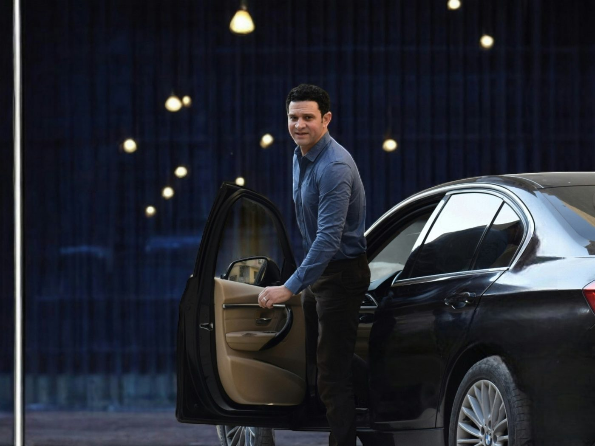

How Executive Car Service Actually Saves Companies Time

Executive car service often gets filed under "nice-to-have" in a travel budget — a comfort expense rather than a business one. In practice, for companies running tight schedules, it's closer to insurance against the one thing that actually costs money: lost time.
The hidden cost of driving yourself
Parking downtown, circling for a spot, walking from a garage — none of that shows up on an expense report as "wasted time," but it adds up fast across a week of client meetings. A driver who already knows where to park and drop off removes that entire category of friction, and it's time an executive gets back for actual work.
The car becomes a second office
The most concrete value is the simplest one: a chauffeured ride is working time, not driving time. Calls, email, prepping for the next meeting — all of it happens between stops instead of after them. For someone with back-to-back meetings across the Bay Area in a single day, that's often an extra hour of real productivity that would otherwise be spent behind the wheel.
"A chauffeured ride is working time, not driving time."
Predictability matters more than speed
Rideshare pricing and availability swing hard during commute hours and around major Bay Area events — Giants games, conferences, conventions at Moscone Center. A booked car service isn't necessarily faster in light traffic, but it's predictable: the same driver, the same pickup process, the same buffer built into the route regardless of what else is happening in the city that day. For roadshows and multi-stop days, that predictability is the actual product.
First impressions, without trying too hard
Picking up a client or investor from the airport in a clean, professional vehicle with a driver who's already tracking their flight says something before anyone speaks a word. It's a small detail, but in client-facing travel, small details are frequently the ones people remember.
When it pays for itself
- Multi-stop days. Three or more meetings across the city in one day, where parking and traffic delays compound.
- Roadshows. Back-to-back investor or client meetings on a fixed schedule with no room for delay.
- Client and VIP pickups. First impressions at the airport or hotel that reflect on the company.
- Team shuttles. Moving a group between an office, a venue, and an airport without splitting into separate cars.
Executive car service isn't about avoiding traffic entirely — nothing does that in the Bay Area. It's about converting the time you'd otherwise lose to driving, parking, and searching for pickup spots into time that's actually usable.